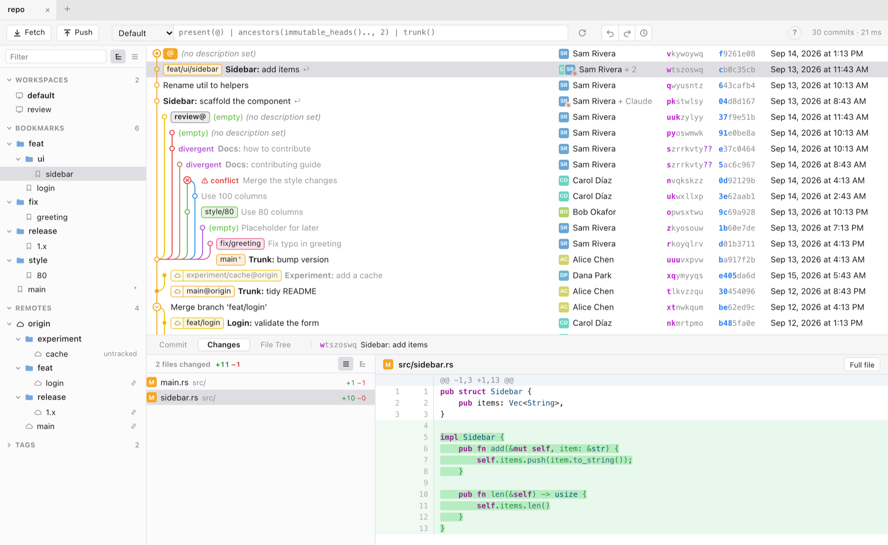
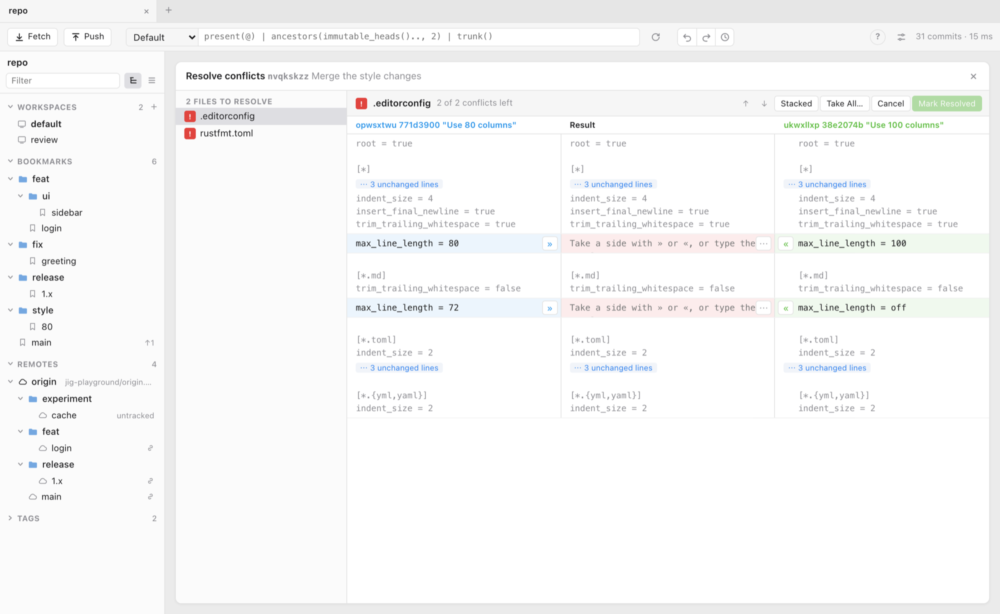
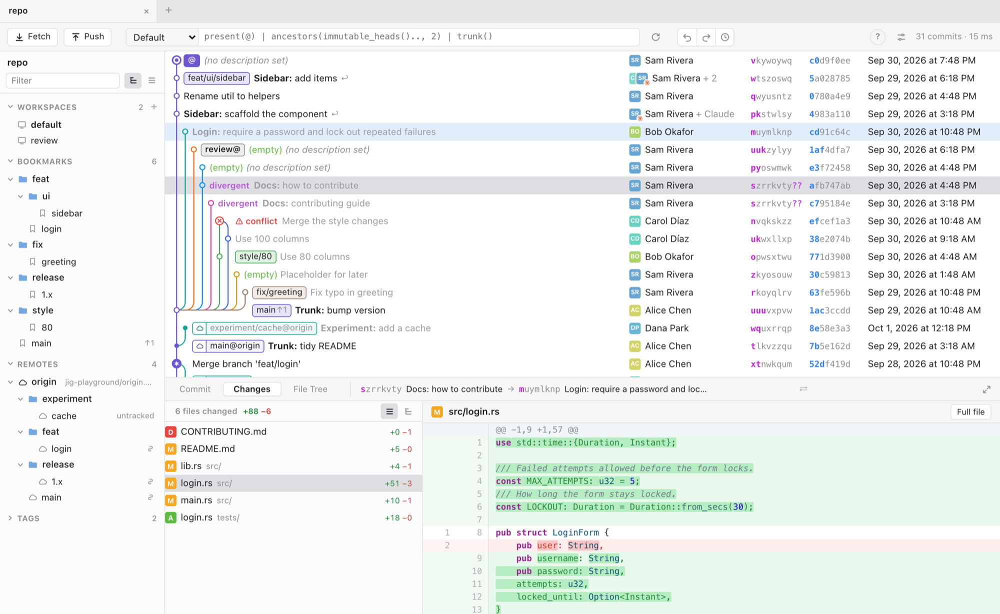
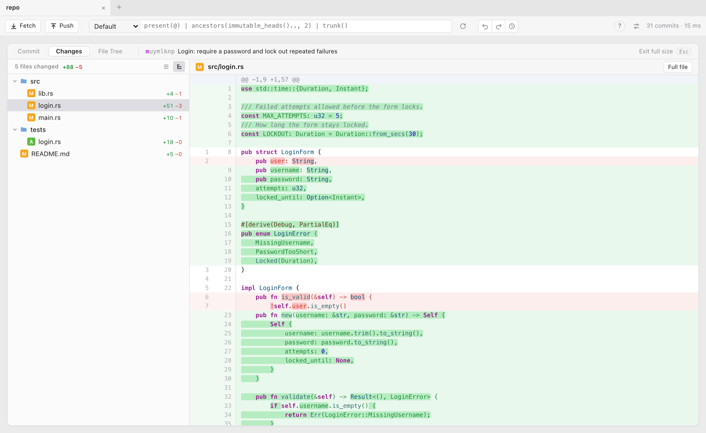
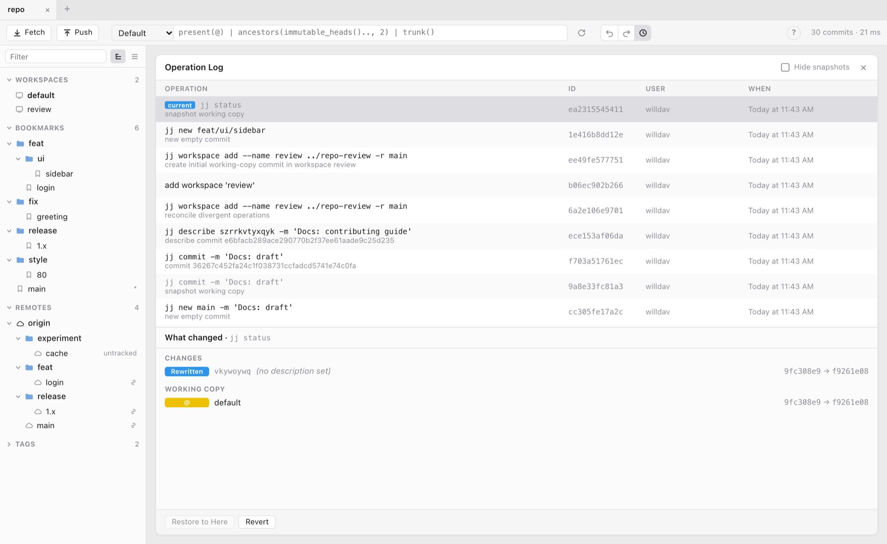

A desktop GUI for Jujutsu
See your whole commit graph, inspect diffs, resolve conflicts side by side, and run
every jj operation with the key bindings you already know
from jjui.
jj 0.40 on your
PATH.

Why Jig
jjui handles most day-to-day jj work right in the terminal. Jig was built to
cover two things a terminal UI makes hard (for me).
See and interact with the whole graph
When you're juggling several workspaces and branches, sometimes it helps to see everything at once interactively.
Resolve conflicts visually
There are already plenty of tools for this, but this one is included right in the GUI. No untangling conflict markers by hand.
That being said, it also does most other things you would expect from a VCS GUI tool!
Everything else you'd expect
- Commit graph with bookmarks, remotes, workspaces, divergence and conflicts
- Diffs, the file tree at any commit, and commit comparison (⌘-click two commits)
- New, describe, squash, split, rebase, abandon, revert and cherry-pick, with undo and redo
- Fetch, push, and bookmark and tag management
- Add, forget and delete workspaces
-
Run any
jjcommand, aliases included, with : - Operation log viewer
- Multiple windows, with tabs you can drag between them
-
jjuikey bindings (press ? for shortcuts) - Right-click menus on commits, bookmarks, files and operations
Conflict resolver
Three column merge view. Take a side with » or «, or type the result yourself, then mark it resolved.

Compare any two commits
Select a commit, then ⌘-click any other to diff the two, even across branches. ⇄ swaps the direction, and Esc goes back to the single commit.

Full-size diff
Press d on the Changes tab or use the → arrow to fill the window with the diff. Use ↑ ↓ to step through files, and j k to step through commits while in full-size mode.

Operation log
Browse every operation, see what each one changed, and restore to or revert any of them.

Install
Jig runs repository changes through your own jj, so it
needs jj 0.40 on your PATH.
-
Download the
.dmgfrom the latest release and drag Jig to Applications. -
Jig isn't notarized yet, so macOS will refuse to open it the first time. Clear the quarantine flag:
xattr -dr com.apple.quarantine /Applications/Jig.app -
Open Jig and choose Open Repository…, or press ⌘T to open another in a new tab.
Tip: you can also open a repo from a terminal, even into a Jig that's already running, or drop a folder on Jig's Dock icon.
open . -a JigOn other systems, build from source.